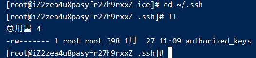

002-生成ssh密钥
- 查看下自己有没有生成过ssh密钥
cd ~/.ssh llid_dsa和id_dsa.pub这2个文件说明没有生成过

- 生成ssh密钥
执行
ssh-keygen -oEnter file in which to save the key (/home/xiaoming/.ssh/id_rsa): Created directory '/home/xiaoming/.ssh'. Enter passphrase (empty for no passphrase): Enter same passphrase again:
- 确认密钥的存储位置，如果不想修改默认路径，就直接回车
- 输入密钥口令，如果不需要就直接回车
- 查看公钥
执行完上面的操作后，会在指定目录上生成
id_dsa和id_dsa.pub这2个文件，其中id_dsa.pub就是我们经常用到的，把里面内容复制到git或者服务器上即可ssh登录cat id_dsa.pub